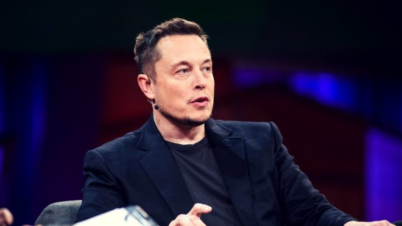

Илон Маск — предприниматель-звезда 21 века. С его натуры был списан образ «Железного человека» (не шутка). На счету достаточно молодого и амбициозного Маска ряд интернет-проектов и самые, пожалуй, громкие физические проекты: SpaceX, Tesla и Hyperloop. Про него говорят разное, но достоверно известно, что он хочет вывести человечество в космос, открыв эпоху космического туризма; основать первые колонии на Марсе; свести на нет грязную автомобильную промышленность, предложив качественные электромобили и доставлять людей от Лос-Анджелеса до Сан-Франциско за 30 минут на скорости 240 км/ч.